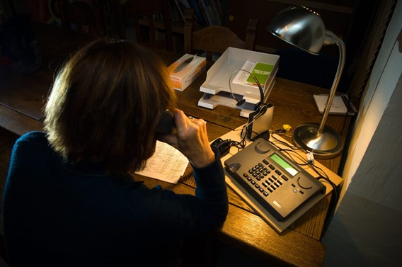

Iemand die luistert
Elke avond bereikbaar, ook op zon- en feestdagen.
Wat wij doen

De Draad is een luisterlijn in Kortrijk. Wie belt, krijgt een vrijwilliger aan de lijn die tijd maakt en niet oordeelt. Wij geven geen advies en verwijzen alleen door als iemand daarom vraagt.
Vorig jaar namen we bijna elfduizend oproepen aan, verdeeld over zesenvijftig vrijwilligers. De meeste gesprekken duren tussen tien en veertig minuten.
Alles wat aan de lijn gezegd wordt, blijft bij de vrijwilliger. Wij registreren geen namen en geen nummers.
Cijfers van vorig jaar
10 842
oproepen aangenomen
56
vrijwilligers aan de lijn
22 min
gemiddelde duur van een gesprek
Word vrijwilliger
Je krijgt eerst een opleiding van acht avonden. Daarna neem je één wacht van vier uur per week op.